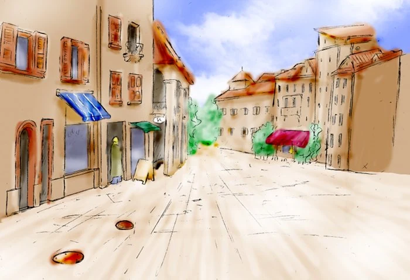
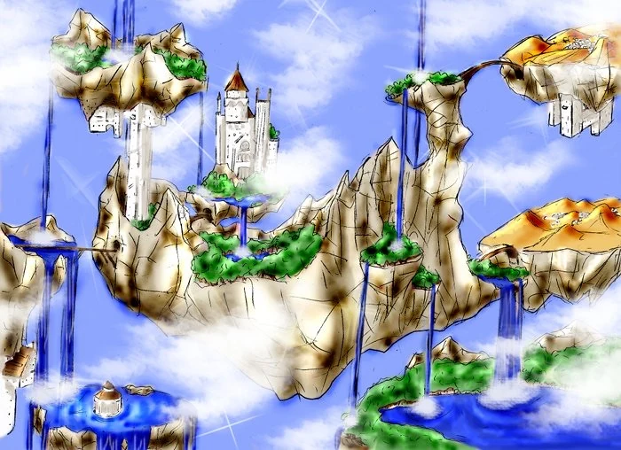
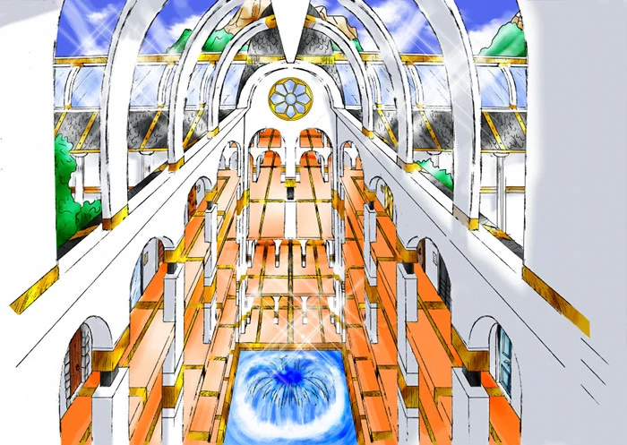

Le Monde Réel

Le Monde dit "réel" est le monde dans lequel vit les humains.
Dans le Monde Réel, les gens ont des rêves, des espoirs, motivés, entre autre, par des contes, des mythes et légendes lues ou racontées. A chaque fois que quelqu'un ouvre un livre pour lire une histoire, celle-ci a réellement lieu dans le monde d'Elenda. Cela produit une énergie qui permet de faire vivre et d'étendre Elenda.
Elenda

Elenda est un monde qui existe dans les Brumes Éternelles.
Elenda vit grâce à l'énergie fourni par les rêves des gens. Le pays est gouverné par le Roi Djiane et la Reine Céliane. Les scientifiques sont chargés de faire fonctionner les contes et d'accumuler le plus d'énergie possible pour étendre les Brumes Éternelles. Les contrôleurs, quant à eux, veillent à ce que les contes se déroulent correctement et qu'il n'y ait aucune rupture dans l'approvisionnement de l'énergie.
La Via Esperita

La Via Esperita est un bâtiment dans lequel toutes les portes donnant accès aux contes se trouvent.
Le bâtiment est géré par l'Ordre des Scientifiques. Il est intimement lié aux contes et s’agrandit au fur et à mesure que le nombre de contes, mythes et légendes s'ajoutent.